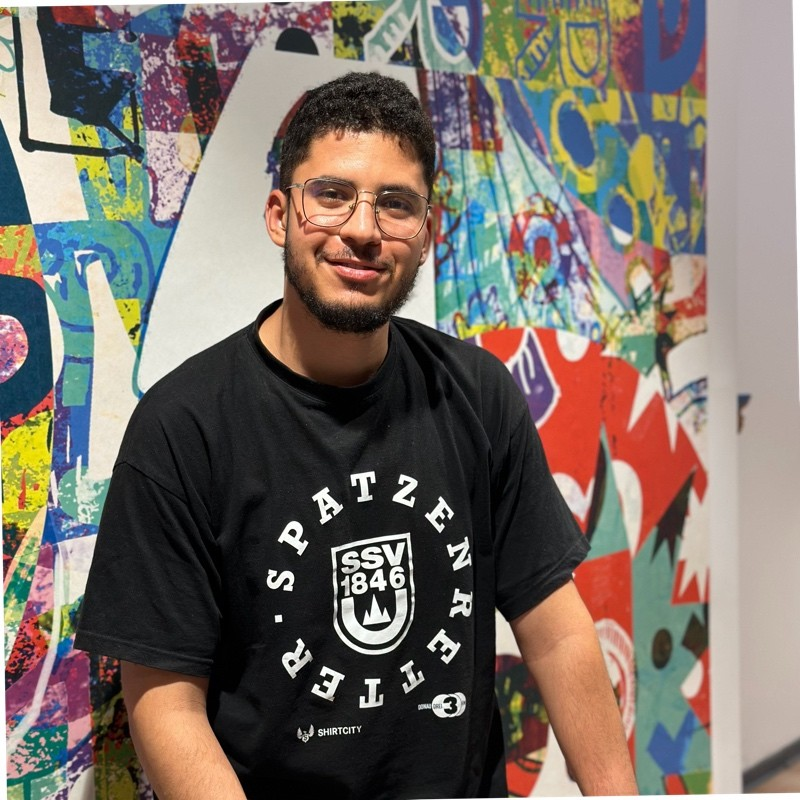

History of Healthy Care
Welcome to Healthy Care , a platform dedicated to transforming the dialysis experience by offering solutions tailored to the unique needs of each patient.
This project was born out of the dedication and shared vision of two friends, Amir Rjeb and Samer Arfaoui. Both deeply aware of the challenges faced by dialysis patients and their families, they decided to take action to provide an innovative and compassionate solution. Their goal was simple yet ambitious: to make dialysis care more accessible, flexible, and respectful of each patient's daily life.
This is how they developed Healthy Care , a platform that offers two main options to meet the diverse needs of patients:
- Home dialysis: Inspired by the desire of many patients to receive care in the comfort of their own homes, this option combines technology and medical expertise. We provide a personalized service to ensure every patient receives safe and effective treatment in a familiar environment.
- Dialysis in a medical center: Aware that some patients prefer a fully supervised medical setting, Amir and Samer also designed a network of modern and well-equipped centers where patients can receive care in complete serenity, supported by experienced professionals.
Since its inception, Healthy Care has been committed to putting patients and their well-being at the heart of everything it does. Thanks to their passion and dedication, Amir and Samer have built an innovative solution that meets patients' expectations while adhering to the highest standards of quality and safety.
We are proud to continue this journey with you and to keep innovating to improve the lives of those in need. Discover our services and be part of this story that places humanity at the center of every decision.